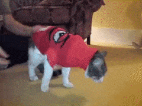

Saúde
Assim como os sapatos, usar roupinha sem necessidade pode gerar alguns problemas de saúde. Por debaixo da roupinha podem surgir fungos e outros parasitas, desencadeando dermatites nos pets. Além disso, roupas utilizadas por muito tempo tendem a esconder lesões que, se não tratadas, podem infeccionar e gerar quadros graves!
Nos gatos, a questão é ainda pior
Se seu gato permanece dentro de casa, como deveria, não há necessidade do uso de roupas. Disponibilizar uma coberta no local onde ele dorme é o suficiente. Gatos que utilizam roupinhas ficam impossibilitados de fazer sua higiene, e isso os deixa profundamente afetados emocionalmente. A roupa também diminui sua mobilidade, o que pode gerar graves consequências quando ele tentar se aventurar no alto. Muitos felinos sofrem quedas ao tentar pular de um móvel ao outro.
